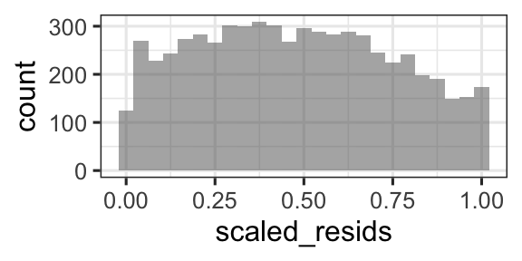
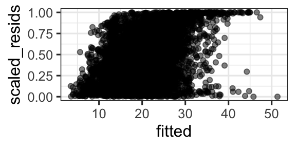
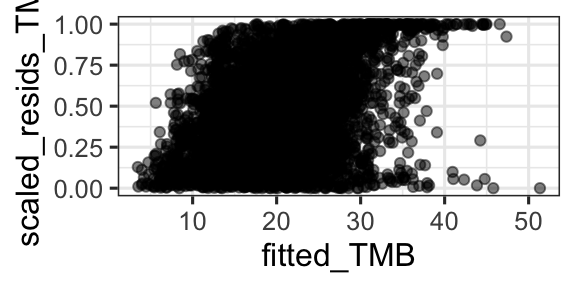

rem5 <- lmer(DurAvg ~ DepthAvg + TransClass + SonarA + SonarB +
(1|TagID/TagDayPeriod), data=d,
na.action='na.fail', REML=FALSE)14 Random effects with glmmTMB and standardized residuals
In the previous chapter we considered fitting mixed-effects models with lme4. What about fitting the same models with package glmmTMB? And how can we assess expectations about residual variance for models like these?
14.1 Model for whale dive duration
We start with our previous model for whale dive duration.
14.2 glmmTMB
We fitted these models using lmer() and glmer() from package lme4, which is probably the most commonly used R package to fit these models. But we’ve also used glmmTMB in this course, and it can also fit random effects models. The syntax to add random effects to a glmmTMB() model is exactly the same as for the lme4 functions.
One difference is that for glmmTMB() REML = FALSE is the default.
glmmTMB may be faster in some cases.
library(glmmTMB)
rem6 <- glmmTMB(DurAvg ~ DepthAvg + TransClass + SonarA + SonarB +
(1|TagID/TagDayPeriod), data=d,
na.action='na.fail', REML=FALSE)If you view the summaries, you will see that rem5 and rem6 are basically identical (in terms of model coefficients and variance estimates).
14.3 Model assessment with scaled residuals
For models where Pearson residuals are not helpful/can not be computed, one option is scaled residuals via simulation.
- Simulate many replicates from the fitted model corresponding to each data observation
- Examine the distribution of the simulated data, and use it to scale the observed value to get a “scaled residual” such that a residual of 0 means that all simulated values are larger than the observed value, and a residual of 0.5 means half of the simulated values are larger than the observed value, and a residual of 1 means that the observed value is larger than all the simulated values.
These scaled residuals should be uniformly distributed between 0 and 1, if the model is correct.
There is a much more detailed explanation in the DHARMa package documentation online.
Example: computing scaled residuals, creating 1000 simulated datasets (don’t lower it much below this to get good estimates). Note: use R chunk setting “message = FALSE” to print messages during simulation to your screen, rather than your knitted file.
library(DHARMa)
sims <- simulateResiduals(fittedModel = rem5, n = 1000)
d <- d |>
mutate(scaled_resids = sims$scaledResiduals,
fitted = fitted(rem5))If our model is perfectly correct, we would expect:
- Histogram of scaled residuals looks uniform between 0 and 1
- Plot of scaled residual vs. fitted, or vs. any predictor, look uniform (evenly spread, no trends, constant in variance).
gf_histogram(~scaled_resids, data =d)
gf_point(scaled_resids ~ fitted, data = d, alpha = 0.5)

14.3.1 glmmTMB version
sims2 <- simulateResiduals(fittedModel = rem6, n = 1000)
d <- d |>
mutate(scaled_resids_TMB = sims2$scaledResiduals,
fitted_TMB = fitted(rem6))gf_point(scaled_resids_TMB ~ fitted_TMB, data = d, alpha = 0.5)
14.3.2 You now have the power!
You may use these scaled residuals for any of the models considered so far this semester. It is basically an alternative method of scaling residuals so that we know “how they should look” in residual plots.